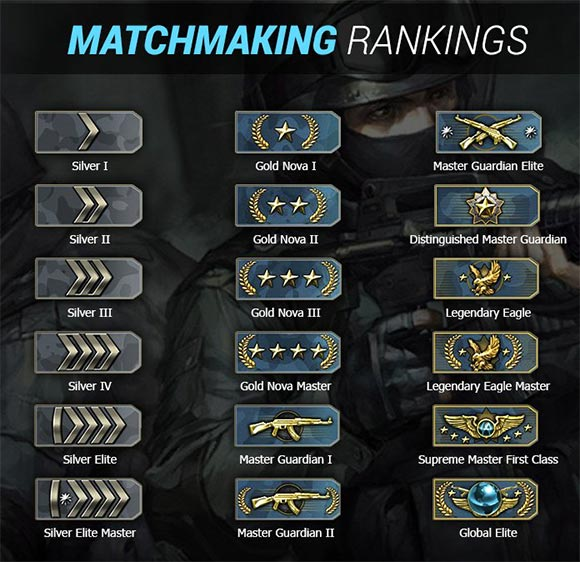
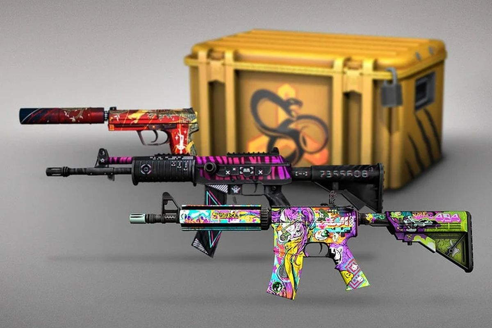

Counter Strike Global Offensive
Principe de Jeu
En 1999 Counter-Strike voit le jour en tant que modélisation (mod) à partir du jeu Half-Life. De la bêta à la version finale, Counter-Strike à perfectionné sont gameplay pour devenir la référence en tant que jeu de tir compétitif avec le soutien d’une communauté de passionnés.
Modes de Jeu
Compétitif classique :
C’est le style de jeu (gameplay) qui a rendu Counter-Strike si populaire. Rejoignez un match 5 contre 5 de 30 sessions en utilisant les règles du standard compétitif sur une map classique. Vous pouvez rejoindre un match seul ou former une équipe et combattre en tant que groupe.
Prêt pour l’action mais pas pour faire un match complet ? Jouez comme vous le souhaitez sans contrainte. En mode occasionnel les joueurs commencent automatiquement avec des protections et des kit de désamorçage. Vous obtiendrez des points pour les victimes que vous faites (kills).
En mode démolition les joueurs jouent à tour de rôles l’attaque et la défense d’un site piégé (bombsite) dans une série de maps privilégiant l’action rapide. Les joueurs se voient attribuer une armes automatiquement au départ et obtiennent d’autres armes en fonction de leurs kills. Essayez de faire un kill par match et d’obtenir le fameux fusil de précision, arme la plus prestigieuse !
Ce mode particulièrement nerveux comprend des combats rapprochés et des résurrections (respawns) instantanées. Les joueurs obtiennent de nouvelles armes immédiatement après un kill et progressent d’armes en armes en fonction du déroulement du jeu. L’arme ultime est le couteau en or, il sera le prix de votre victoire.
Système de Rank
Les Skin
Les skins , également appelés finitions , sont une fonctionnalité exclusive à Counter-Strike : Global Offensive , introduite dans la mise à jour Arms Deal . Ce sont des armes avec différentes textures qui peuvent être équipées en jeu. Ils sont entièrement cosmétiques et n’ont aucune fonction de gameplay.
Pour acquérir un skin, il faut soit :
Gameplay
- Element